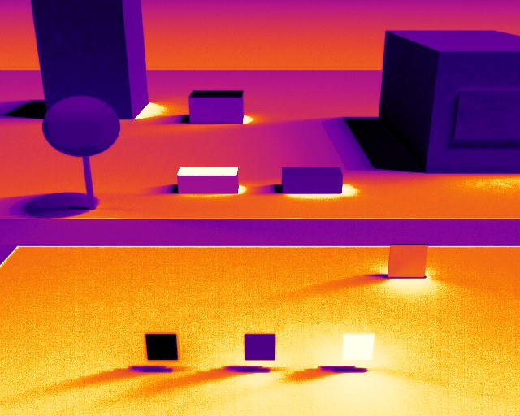

Research
Selected projects

2026 · Inverse rendering
Unbaking the Sun
Photogrammetric city meshes such as Google's Photorealistic 3D Tiles come with the capture-day sunlight frozen into their textures. I recover that sun from the texture and geometry alone, then strip the baked shadows so the city can be relit at any time of day.
0.07°mean sun-direction error
~1 minper tile, CPU only

2026 · Simulation
ThermalIR
A radiometric LWIR/MWIR camera for Unreal Engine 5. It solves transient heat conduction driven by sun, sky, air and wind, renders the band radiance a real sensor would receive, and runs it through a full detector model: optics, microbolometer, noise and AGC.
136physics validation checks
0.082 Kblackbody error, Boson model